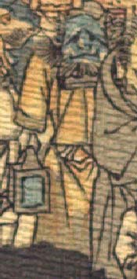

青い肌の鬼。頭頂は禿げ、角を2本生やしている。側頭部から髪がもじゃもじゃと生えている。目は小さく、下がっており、口は横に引き結ばれている。あごひげを生やしている。黄色い衣服を身に着け、右手に行灯のようなものを持っている。
著作者：J.Dautremer／出典：親書誌：U426_nichibunken_0123：Le vieillard et les démons／日付：2006／資源識別子：U426_nichibunken_0123_0002_0011
Copyright (c)2010- International Research Center for Japanese Studies, Kyoto, Japan. All rights reserved.